Red Dead Redemption 2
The definitive open-world epic set in the dying days of the American frontier.
Review
Red Dead Redemption 2 is the most ambitious open world ever created. As Arthur Morgan — a senior member of the Van der Linde gang — you ride through a meticulously hand-crafted 1899 America, from the sun-baked bayous of Lemoyne to the snowy peaks of Ambarino, as the law closes in from every direction. Every square mile is dense with emergent stories: fishermen philosophizing on riverbanks, escaped convicts begging for help, spontaneous gang shootouts that test your split-second decision-making. The world doesn't merely exist as a backdrop — it breathes with a kind of life no other developer has matched.
Arthur's arc is nothing short of a masterpiece of modern storytelling. The honor system tracks every moral choice across 60+ hours of play, and the ending you receive is shaped entirely by the person you chose to be. The game tackles themes of loyalty, legacy, mortality, and redemption with a sincerity that few interactive works have achieved. Companion camp interactions — Dutch's increasingly unhinged philosophy, Hosea's world-weary wit, John's anxious hope — build genuine emotional investment in a cast of dozens.
The attention to detail is staggering: NPCs follow realistic daily schedules, wildlife runs a full predator-prey simulation, mud visibly accumulates on Arthur's boots in swamps, and your horse develops a measurable bond with you over hundreds of miles together. On PC at maximum settings, it remains among the most visually stunning games ever made. Red Dead Redemption 2 represents the absolute ceiling of what the single-player open-world can currently achieve — and may for years to come.
Strengths and Limits
- Unmatched environmental storytelling and world density
- Arthur Morgan is one of the greatest protagonists in gaming history
- Honor system genuinely shapes the narrative and its emotional ending
- NPCs follow realistic schedules; wildlife runs a real ecosystem simulation
- Musical score and ambient soundscapes are a masterclass in immersion
- Stunning visual fidelity, especially on PC at max settings
- Deliberately slow, methodical pacing — not suitable for all players
- PC port had a rough launch (now substantially fixed)
- Some missions rigidly punish creative or non-scripted approaches
- High-end hardware required to experience at full fidelity
Reader Fit
This review is written around fit: who should play it, what kind of session it rewards, and what friction might make it wrong for another reader. A high grade does not mean every player should buy it immediately. It means the game has a clear identity, a strong reason to exist, and enough craft to justify attention from the right audience.
Official Store Links
Editorial Method
This page is part of a cleaned Envizion publishing set. It is written for a reader who wants a practical decision, not a search-engine doorway. The page uses an original local SVG cover made inside this project, summarizes the strongest points directly, and keeps the limits visible. Where the topic depends on changing stores, patches, follower counts, or platform behavior, the page treats those details as estimates and points readers toward checking the current official profile or store before making a final decision.
The goal for this game review page is to add enough context that a visitor can leave with a useful conclusion. It avoids imported stock images, copied articles, and placeholder entries. If a note is only a short draft or generated filler, it is kept out of the sitemap until it has a real editorial reason to exist.